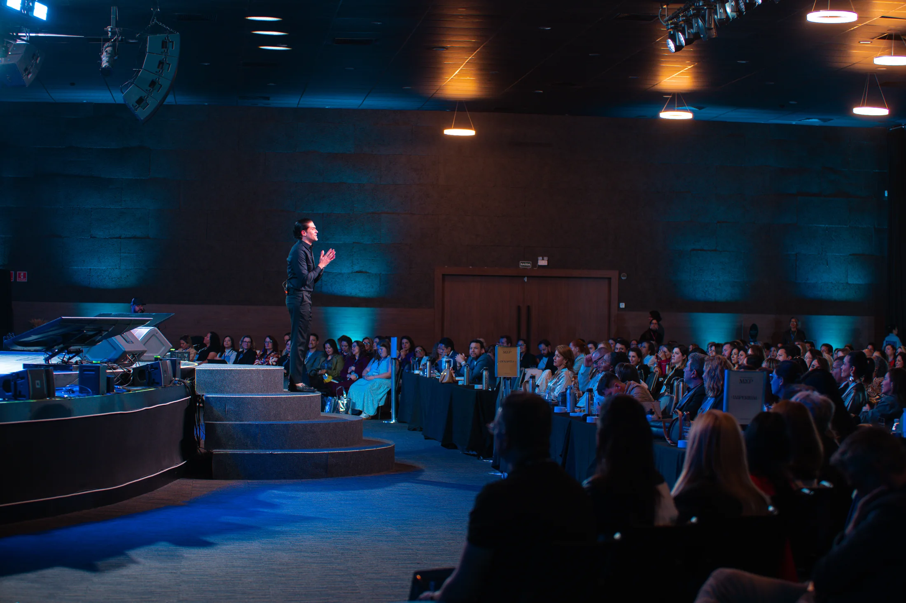

Torne-se especialista em gente.
Desenvolva a sua mente, a do seu time e a do seu cliente.
Gente decide tudo no seu negócio, e ninguém te ensinou gente. Quando você aprende, o time e o cliente se apaixonam pela marca e pelo movimento que vocês construíram juntos.

A ponte que não existe no Brasil
Uma escola trata a cabeça do dono.
A outra trata a operação.
Ninguém trata as duas.
De um lado existem os programas que cuidam da pessoa: propósito, família, decisão, sentido. Eles funcionam e deixam a empresa do jeito que estava. Do outro lado existem as escolas de negócio, que ensinam processo, meta e gestão. Elas funcionam e devolvem o dono do mesmo jeito que pegaram.
A Legado Leader existe no meio, e é por isso que a ordem dela começa em você. A paixão pelo que você construiu não desce por campanha nem por bônus. Ela começa na sua cabeça, passa pelo time e chega no cliente. Nessa sequência, e não existe atalho.
Quem sai daqui vira especialista em três mentes. A própria, a de quem trabalha com ele e a de quem compra dele.
Encontros Legado Leader
Gente, presença
e conexão.
Registros do nosso evento.


O que você leva embora
Um time e clientes apaixonados pelo que você construiu.
Essa é a consequência, e ela tem quatro provas concretas. Movimento é palavra bonita e não vale nada sozinha, então aqui ela vem sempre traduzida. Você olha para a sua empresa e vê se as quatro estão lá.
Funcionário que fala da empresa como se fosse dele
Engajamento de pesquisa interna não mede isso. O que mede é a pessoa dizendo "a gente" sem perceber, e defendendo a decisão da casa numa mesa em que você não está.
Cliente que defende a marca sem ganhar nada
Ninguém pagou, ninguém pediu e não tem cupom envolvido. Ele indica porque comprou a ideia antes de comprar o produto.
Líder que recebe contraproposta e fica
Esse é o mais caro de todos. Quando alguém recusa mais dinheiro para continuar com você, o que segurou não foi salário.
Gente na fila querendo trabalhar lá
O currículo chega antes de você anunciar a vaga. A empresa virou um lugar onde as pessoas querem estar, e isso muda o custo de contratar.
Essas quatro coisas não se compram com bônus, com plano de carreira nem com campanha de marketing. Elas são consequência de uma ordem que quase ninguém segue.
O momento
Pergunte para dez pessoas da sua empresa o que vocês fazem. Você vai ouvir dez respostas diferentes.
Faça o teste hoje à tarde, sem avisar ninguém. Se as dez respostas não baterem, o problema não está na equipe: está no fato de que a empresa nunca teve uma frase só. E ninguém carrega o que não sabe explicar.
Não falta mercado nem estratégia. Acontece que, passado um certo tamanho, tudo passa a depender de gente, e gente é a única variável que ninguém ensinou você a operar com método.
Vale para quem está montando a primeira operação séria e vale para quem já tem empresa consolidada. O problema não muda de natureza: muda de escala.
Faturamento. O crescimento tem o tamanho da sua semana. Você já sabe quanto faturaria se existissem dois de você, e esse número incomoda.
Gente na função errada. Você tem gente boa rendendo pouco. Quase sempre não é preguiça nem falta de talento, e ninguém no time tem coragem de dizer isso na sua frente.
Comunicação. Você explica bem e o time repete errado. Cada liderança conta uma versão diferente da mesma empresa para o mesmo cliente.
Mercado. Você sabe que entrega mais, e o cliente escolhe o mais barato, porque ninguém ainda conseguiu explicar, em uma frase, por que você vale mais.
Liderança. Você formou executor, não líder. As decisões voltam todas para a sua mesa porque ninguém ali foi ensinado a decidir.
O que ninguém fala em voz alta. Ninguém ali dentro se importa como você se importa. E isso não se resolve com bônus, nem com processo, nem com mais uma reunião.
Os cinco primeiros têm solução conhecida, e boa parte do mercado ensina. O sexto é o que a Legado Leader resolve, e é ele que decide os outros cinco.
Não é sentimento. Tem número em cima disso.
Metade de quem pede demissão diz que a empresa poderia ter evitado, e metade diz que ninguém conversou com ela nos três meses antes de sair. É uma conversa de liderança que não aconteceu, e ela custa em reais.
26% dos funcionários incentivam a própria família a usar o produto da empresa onde trabalham. Os outros 74% não recomendam nem para a mãe o que ajudam a fabricar.
41% sabem dizer o que diferencia a marca da empresa dos concorrentes. Entre quem não é gestor, cai para 37%.
240% de resultado superior nas empresas que têm time engajado e cliente engajado ao mesmo tempo.
R$ 81,5 mil é o custo de repor uma pessoa de R$ 120 mil por ano. No Brasil a rotatividade passa de 51% ao ano.
Gallup, State of the Global Workplace e pesquisas de marca interna. Custo de reposição pela BGC Brasil. Rotatividade pelo Mapa do Cenário de Gestão de Pessoas da Sólides.
Juntar gente numa sala é medíocre. Formar gente que abraça a causa e luta por ela, isso é liderança. E depende de método. Quase ninguém tem.
Lucas Albuquerque, em Construa Sua Influência
A ordem
Identidade, pessoas e movimento.
Nessa ordem, porque nenhuma outra funciona.
Cada fase é uma mente. A sua, a do seu time e a do seu cliente. Processo faz gente cumprir, e processo é necessário, mas ele não faz ninguém se apaixonar.
Quase todo mundo tenta começar pelo fim. Contrata gente boa antes de saber o que a empresa é, e depois investe em campanha para o mercado entender o que nem o time entende. Por isso troca de gente com frequência, refaz o discurso todo ano e continua competindo por preço.
A Legado Leader inverte isso. Primeiro a empresa descobre quem é e consegue dizer em uma frase. Depois passa a escolher, formar e soltar as pessoas certas em cima dessa frase. Só então o mercado começa a repetir a mesma coisa que o time repete. São 19 princípios em três partes, o mesmo método de Construa Sua Influência, aplicado ao seu caso dentro da sala.
Você descobre o que construiu
A sua história e a da empresa em uma página, e a frase que explica por que vocês existem. Começa em você porque ninguém carrega o que o dono já não carrega. Propósito aqui não é motivação, é endereço. É o que faz alguém largar o que está fazendo para vir com você, e é o que o time vai repetir do mesmo jeito em dez conversas diferentes.
As pessoas certas entram e ficam
Escolher os certos, não os melhores. Como conduzir sem controlar, como formar líder em vez de executor e o que fazer com as pessoas difíceis, as que você não pode perder e as que não pode manter. É aqui que o funcionário começa a falar da empresa como se fosse dele.
O mercado adota como se fosse dele
Posicionamento a ponto de ser impossível de ignorar, e uma causa que o cliente defende de graça porque acredita nela. É o degrau em que a empresa deixa de depender da sua presença e passa a andar pelo que as pessoas carregam.
Como funciona
O que existe na escola
Quatro caminhos, e todos ensinam a mesma ordem. Muda a profundidade, o tempo que você tem e o quanto você quer que a sua empresa mude.

Construa Sua Influência
Os 19 princípios em formato de leitura, publicado pela Buzz Editora. É por onde a maioria das pessoas entra e entende a ordem antes de aplicar.
Uma noite na sua cidade
Duas horas e meia sobre entender gente, realizada por um anfitrião local. É onde a maioria vê o método funcionando pela primeira vez.

Um sábado inteiro, presencial
Em Alphaville, com líderes e empresários na mesma sala. Você sai com três documentos escritos: quem vocês são, quem pode entrar no time e a frase que a empresa vai repetir.
Doze meses numa sala fechada de donos
Atravessando as três mentes inteiras, com encontro semanal e presenciais no ano. É onde a empresa deixa de funcionar e passa a ser carregada.
E existe o caminho para empresa, com o método aplicado dentro da sua operação e com o seu time inteiro, desenhado caso a caso. Conhecer
Quem conduz
Lucas Albuquerque
Passou dez anos em comunicação e marketing antes de construir o que construiu. Foi head de comunicação do Governo do Estado de São Paulo e estrategista de grandes artistas e marcas.
Depois disso construiu cinco organizações do zero, e hoje são centenas de pessoas envolvidas e apaixonadas por esses movimentos. Gente que ninguém obriga a estar ali, que continua ano após ano e que defende o projeto com mais força do que a maioria dos times defende a empresa onde trabalha. Foi aprendendo a fazer isso que ele montou o método que está na sala. Dez anos em comunicação de um lado, cinco movimentos construídos com gente que escolheu estar ali do outro. É de onde vem a ponte entre a cabeça do dono e a gestão de gente da empresa.
Hoje palestra em empresas e para líderes com regularidade e mantém um encontro semanal com empresários no Shopping Cidade Jardim, em São Paulo.
É autor de Construa Sua Influência, publicado pela Buzz Editora, onde foi reconhecido como autor destaque na Bienal do Livro de São Paulo de 2026.
Para quem é
Quem já tem gente sob a
sua responsabilidade
Do dono que está montando a primeira operação séria ao empresário com empresa consolidada e liderança formada. Também para quem lidera equipe dentro de uma companhia grande, para o profissional com autoridade construindo marca própria e para quem toca uma causa e precisa que outras pessoas a carreguem junto.
Empresa, movimento ou causa: a ordem é a mesma. Muda o que está escrito na porta, não o que faz as pessoas ficarem.
Critério prático: pelo menos cinco pessoas dependem das suas decisões, e você decide sozinho onde investe.
Para quem não é
Quem ainda não lidera ninguém
Quem procura palestra motivacional. Quem quer fórmula de enriquecimento rápido. Quem ainda não começou e espera que alguém decida o caminho.
Isso não quer dizer que essas pessoas não importam. A sala só funciona quando todo mundo nela tem onde aplicar na segunda-feira de manhã.
Próxima turma
14 de novembro.
Alphaville.
Turma fundadora do Método Construa. Um sábado, líderes e empresários na mesma sala, três documentos escritos e um lote que existe uma única vez.